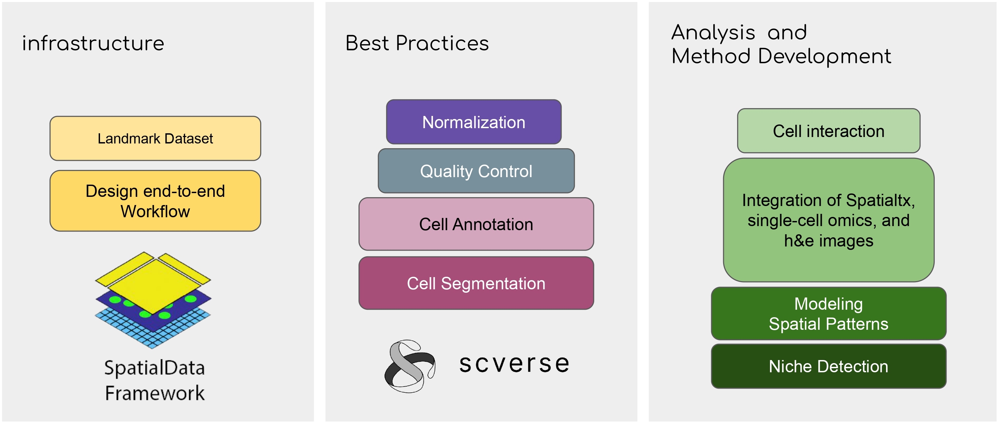

Spverse - Hackathon for Prototyping in-house Analysis Workflows for Spatial Omics
 19th-21th July 2023
19th-21th July 2023

Abstract
Welcome to the Hackathon for Prototyping In-house Analysis Workflows for Spatial Omics, organized by DKFZ Heidelberg. This dynamic event brings together experts, researchers, and data scientists in a collaborative environment to explore innovative solutions in spatial omics data analysis. Our goal is to develop efficient and scalable analysis workflows for spatially resolved genomic and proteomic data. By participating in this hackathon, you will have the opportunity to collaborate with peers, work on real-world datasets, and prototype cutting-edge tools that enable insightful interpretations of spatially resolved biological data.
The field of spatial omics is rapidly evolving, driven by advancements in technology and the need for comprehensive analysis methods. This hackathon provides a unique platform for interdisciplinary collaboration, allowing participants with diverse backgrounds such as bioinformatics, software development, and spatial biology to contribute their expertise. During the event, teams will collaborate, guided by mentors to develop prototypes within a specific timeframe.
Don't miss this opportunity to be part of the Hackathon for Prototyping In-house Analysis Workflows for Spatial Omics. Register now and immerse yourself in a stimulating environment where you can push the boundaries of spatial omics analysis. Join us as we work towards developing powerful tools and methodologies that unlock the potential of spatially resolved biological data.
Hackathon Focus

The main targets of the Spverse are:
Reproducible and integrated workflow for incoming DKFZ's spatial datasets
Finding gaps and brainstorming on solving them
Prototyping a workflow for a external hackathon in October,
* A prototype workflow is implemented by Elyas Heidari.
The main targets of the Spverse are:
Community engagement
At the Hackathon for Prototyping In-house Analysis Workflows for Spatial Omics, we believe in the power of community engagement. We strive to foster a collaborative environment where participants can connect, network, and share knowledge.
Throughout the hackathon, you will have the opportunity to engage with experts and mentors in the field of spatial omics analysis.
In addition, the hackathon provides a platform to exchange ideas, insights, and best practices with fellow participants from diverse backgrounds. Through team collaboration and interdisciplinary discussions, you will gain new perspectives and broaden your understanding of spatial omics analysis. We encourage active participation and knowledge sharing, as we believe that collective intelligence drives innovation and propels the field forward.
Join us in Sharing our knowledge at the Hackathon for Prototyping In-house Analysis Workflows for Spatial Omics. let's create lasting connections, inspire one another, and shape the future of spatial omics research.
Team
Prof. Oliver Stegle
Supervisor


Prof. Moritz Gerstung
Supervisor
Elyas Heidari
Organizing Committee
Mostafa Shahhosseini
Organizing Committee